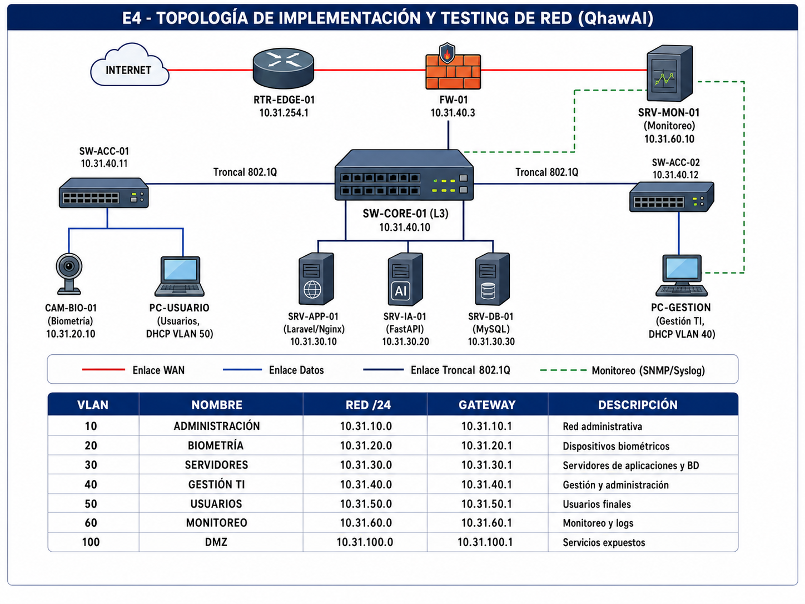
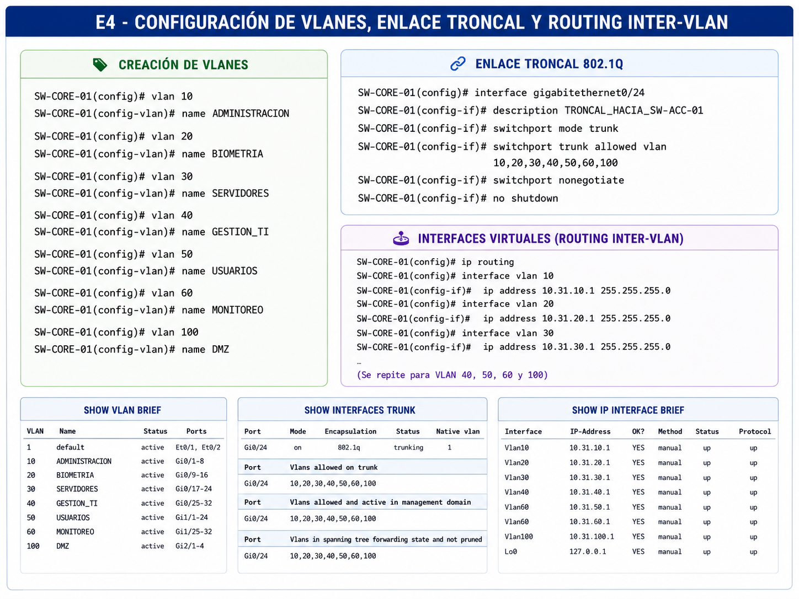
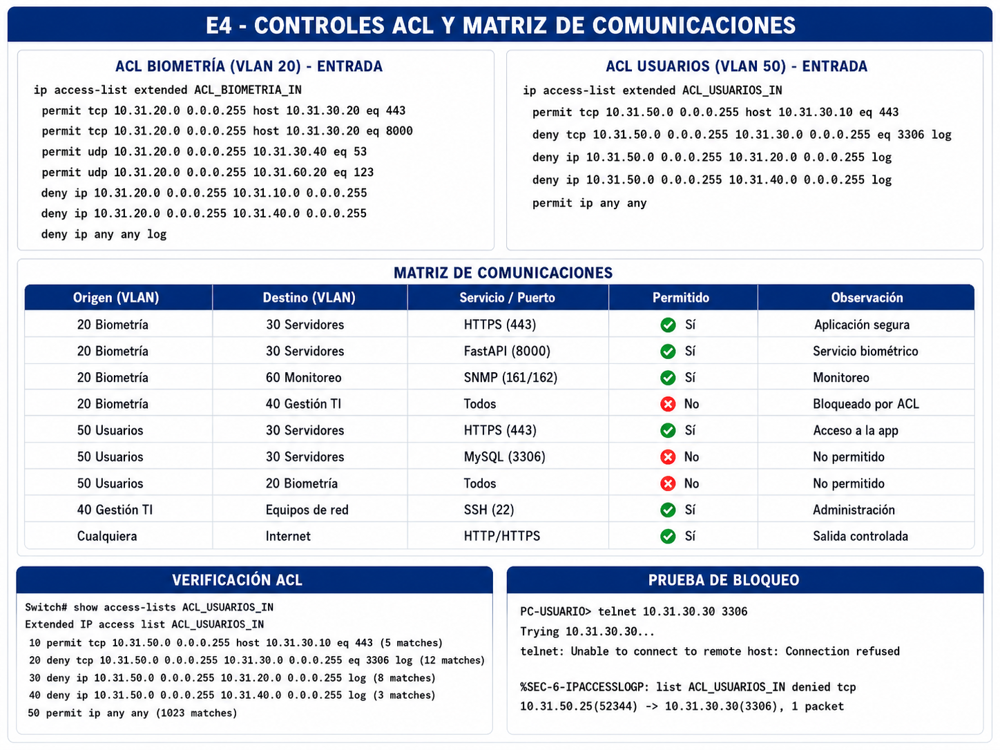
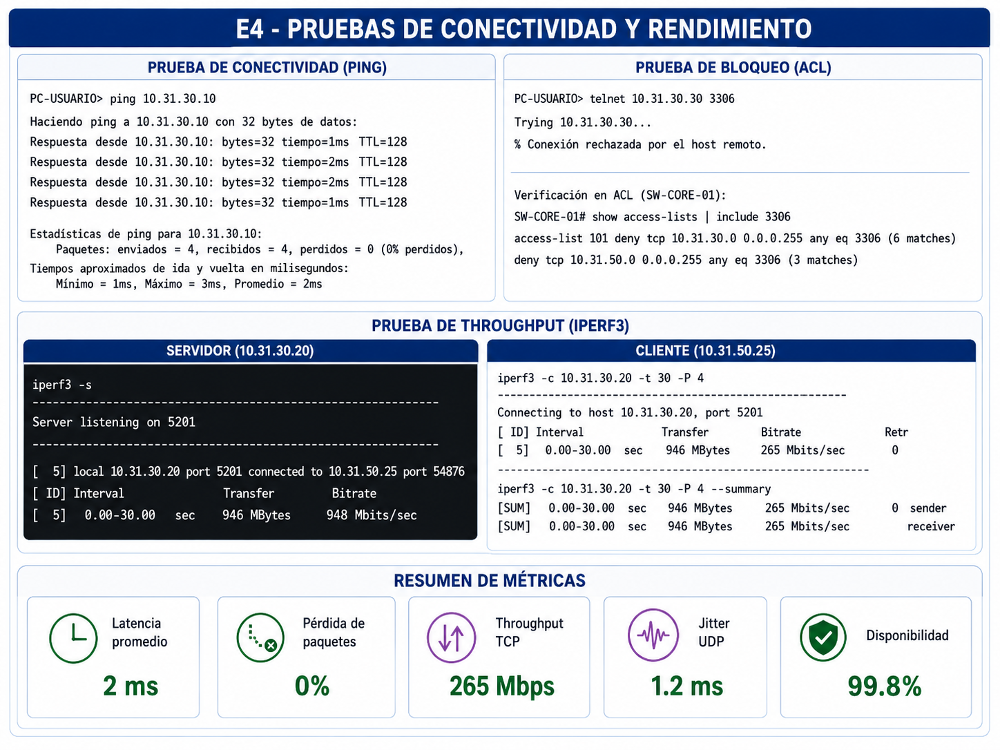
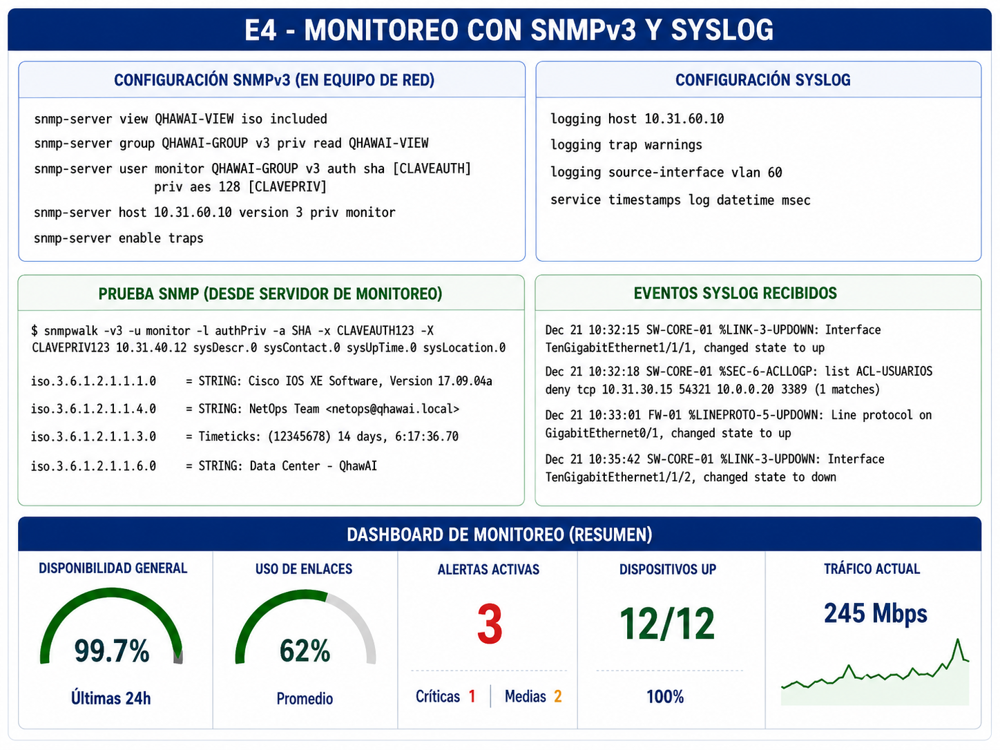
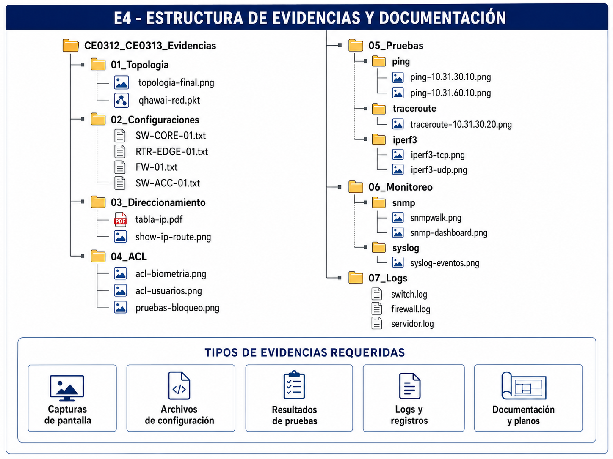

Entregable 4 — Implementación y Testing de Red
Configuración de dispositivos, direccionamiento IP, routing, controles de acceso, pruebas de conectividad, medición de rendimiento y monitoreo de la infraestructura de red de QhawAI.
Resumen Ejecutivo
El presente entregable documenta la implementación y validación de la infraestructura de red diseñada para soportar QhawAI, sistema inteligente de control de asistencia mediante reconocimiento facial.
La implementación considera segmentación mediante VLAN, direccionamiento IP estructurado, enlaces troncales IEEE 802.1Q, routing inter-VLAN, rutas estáticas, preparación para routing dinámico, listas de control de acceso, seguridad de puertos, monitoreo SNMPv3 y centralización de logs.
Las pruebas comprenden conectividad permitida, bloqueo de comunicaciones no autorizadas, latencia, pérdida de paquetes, throughput, jitter, convergencia y disponibilidad de los equipos críticos.
1. Alcance y Entorno de Implementación
La implementación reproduce el diseño desarrollado en el Entregable 1 CE0311. El escenario puede ejecutarse en Cisco Packet Tracer, GNS3, EVE-NG o un laboratorio físico autorizado.
| Elemento | Alcance | Estado | Evidencia requerida |
|---|---|---|---|
| Segmentación VLAN | VLAN 10, 20, 30, 40, 50, 60 y 100. | Configuración preparada. | Captura de tabla VLAN. |
| Routing inter-VLAN | Interfaces virtuales en switch de capa 3. | Configuración preparada. | Tabla de rutas y pruebas. |
| Routing externo | Ruta por defecto hacia firewall o router. | Configuración preparada. | Salida de show ip route. |
| Controles de acceso | ACL para biometría, usuarios y gestión TI. | Configuración preparada. | Pruebas permitidas y bloqueadas. |
| Monitoreo | SNMPv3, syslog, NTP y alertas. | Pendiente de validar. | Dashboard, logs o capturas. |
| Rendimiento | Latencia, pérdida, throughput y jitter. | Pendiente de ejecutar. | Ping, iperf3 y capturas. |
2. Topología Implementada

| Código | Dispositivo | Función | Dirección de gestión |
|---|---|---|---|
| RTR-EDGE-01 | Router perimetral | Enrutamiento hacia redes externas. | 10.31.40.2 |
| FW-01 | Firewall | Filtrado perimetral y salida controlada. | 10.31.40.3 |
| SW-CORE-01 | Switch capa 3 | VLAN, routing inter-VLAN y ACL. | 10.31.40.10 |
| SW-ACC-01 | Switch de acceso | Conexión de cámaras y usuarios. | 10.31.40.11 |
| SRV-APP-01 | Servidor Laravel/Nginx | API y aplicación principal. | 10.31.30.10 |
| SRV-IA-01 | Servidor FastAPI | Procesamiento biométrico. | 10.31.30.20 |
| SRV-DB-01 | Servidor MySQL | Persistencia de información. | 10.31.30.30 |
| SRV-MON-01 | Servidor de monitoreo | SNMP, syslog, métricas y alertas. | 10.31.60.10 |
| CAM-BIO-01 | Dispositivo de captura | Captura facial. | 10.31.20.10 |
3. Configuración de Dispositivos
3.1 Configuración base del switch principal
enable configure terminal hostname SW-CORE-01 no ip domain-lookup service password-encryption enable secret [CLAVE_OCULTA] banner motd # ACCESO EXCLUSIVO PARA PERSONAL AUTORIZADO # ip domain-name qhawai.local username admin privilege 15 secret [CLAVE_OCULTA] crypto key generate rsa modulus 2048 ip ssh version 2 line console 0 logging synchronous exec-timeout 5 0 login local exit line vty 0 4 transport input ssh exec-timeout 5 0 login local exit end write memory
3.2 Configuración de fecha, hora y NTP
configure terminal clock timezone PET -5 0 ntp server 10.31.60.20 ntp update-calendar service timestamps log datetime msec service timestamps debug datetime msec end
3.3 Desactivación de puertos no utilizados
configure terminal interface range GigabitEthernet0/10-23 description PUERTOS_NO_UTILIZADOS shutdown end
3.4 Seguridad de puertos de acceso
configure terminal interface GigabitEthernet0/1 description CAM-BIO-01 switchport mode access switchport access vlan 20 spanning-tree portfast spanning-tree bpduguard enable switchport port-security switchport port-security maximum 1 switchport port-security violation restrict switchport port-security mac-address sticky storm-control broadcast level 5.00 no shutdown end
4. Implementación de VLAN y Enlaces Troncales

4.1 Creación de VLAN
configure terminal vlan 10 name ADMINISTRACION vlan 20 name BIOMETRIA vlan 30 name SERVIDORES vlan 40 name GESTION_TI vlan 50 name USUARIOS vlan 60 name MONITOREO vlan 100 name DMZ end
4.2 Configuración del enlace troncal
configure terminal interface GigabitEthernet0/24 description TRONCAL_HACIA_SW-ACC-01 switchport mode trunk switchport trunk allowed vlan 10,20,30,40,50,60,100 switchport nonegotiate no shutdown end
4.3 Rapid Spanning Tree
configure terminal spanning-tree mode rapid-pvst spanning-tree vlan 10,20,30,40,50,60,100 root primary end
4.4 Comandos de verificación
show vlan brief show interfaces trunk show spanning-tree show spanning-tree vlan 20 show interfaces status show port-security interface GigabitEthernet0/1
5. Implementación del Direccionamiento IP
| VLAN | Nombre | Red | Gateway | Rango sugerido |
|---|---|---|---|---|
| 10 | Administración | 10.31.10.0/24 | 10.31.10.1 | 10.31.10.10–10.31.10.200 |
| 20 | Biometría | 10.31.20.0/24 | 10.31.20.1 | Direcciones estáticas. |
| 30 | Servidores | 10.31.30.0/24 | 10.31.30.1 | Direcciones estáticas. |
| 40 | Gestión TI | 10.31.40.0/24 | 10.31.40.1 | Direcciones estáticas. |
| 50 | Usuarios | 10.31.50.0/24 | 10.31.50.1 | 10.31.50.20–10.31.50.220 |
| 60 | Monitoreo | 10.31.60.0/24 | 10.31.60.1 | Direcciones estáticas. |
| 100 | DMZ | 10.31.100.0/24 | 10.31.100.1 | Direcciones estáticas. |
5.1 Interfaces virtuales del switch capa 3
configure terminal ip routing interface vlan 10 description GW_ADMINISTRACION ip address 10.31.10.1 255.255.255.0 no shutdown interface vlan 20 description GW_BIOMETRIA ip address 10.31.20.1 255.255.255.0 no shutdown interface vlan 30 description GW_SERVIDORES ip address 10.31.30.1 255.255.255.0 no shutdown interface vlan 40 description GW_GESTION_TI ip address 10.31.40.1 255.255.255.0 no shutdown interface vlan 50 description GW_USUARIOS ip address 10.31.50.1 255.255.255.0 no shutdown interface vlan 60 description GW_MONITOREO ip address 10.31.60.1 255.255.255.0 no shutdown interface vlan 100 description GW_DMZ ip address 10.31.100.1 255.255.255.0 no shutdown end
5.2 Configuración DHCP
configure terminal ip dhcp excluded-address 10.31.10.1 10.31.10.20 ip dhcp excluded-address 10.31.50.1 10.31.50.20 ip dhcp pool VLAN10_ADMINISTRACION network 10.31.10.0 255.255.255.0 default-router 10.31.10.1 dns-server 10.31.30.40 domain-name qhawai.local ip dhcp pool VLAN50_USUARIOS network 10.31.50.0 255.255.255.0 default-router 10.31.50.1 dns-server 10.31.30.40 domain-name qhawai.local end
5.3 Verificación de direccionamiento
show ip interface brief show interfaces vlan 20 show ip dhcp binding show ip dhcp pool show arp
6. Configuración de Routing
6.1 Routing estático para el escenario piloto
Para el escenario inicial se utiliza una ruta predeterminada hacia el firewall o router perimetral. Esta alternativa es apropiada cuando existe un número reducido de rutas y una sola salida principal.
configure terminal ip route 0.0.0.0 0.0.0.0 10.31.254.1 end
6.2 Routing dinámico para crecimiento
En una ampliación con varios routers, edificios o enlaces redundantes, podrá implementarse OSPF para mejorar la convergencia y reducir la administración manual.
configure terminal router ospf 10 router-id 10.31.255.1 passive-interface default no passive-interface GigabitEthernet1/0/1 network 10.31.0.0 0.0.255.255 area 0 default-information originate end
6.3 Verificación del routing
show ip route show ip route static show ip protocols show ip ospf neighbor show ip ospf interface brief traceroute 10.31.30.20
7. Implementación de Controles de Acceso

7.1 ACL de dispositivos biométricos
configure terminal ip access-list extended ACL_BIOMETRIA remark PERMITIR HTTPS HACIA SERVIDOR IA permit tcp 10.31.20.0 0.0.0.255 host 10.31.30.20 eq 443 remark PERMITIR SERVICIO INTERNO FASTAPI permit tcp 10.31.20.0 0.0.0.255 host 10.31.30.20 eq 8000 remark PERMITIR DNS permit udp 10.31.20.0 0.0.0.255 host 10.31.30.40 eq 53 remark PERMITIR NTP permit udp 10.31.20.0 0.0.0.255 host 10.31.60.20 eq 123 remark BLOQUEAR RED ADMINISTRATIVA deny ip 10.31.20.0 0.0.0.255 10.31.10.0 0.0.0.255 log remark BLOQUEAR RED DE GESTION deny ip 10.31.20.0 0.0.0.255 10.31.40.0 0.0.0.255 log remark BLOQUEAR CUALQUIER OTRO TRAFICO deny ip 10.31.20.0 0.0.0.255 any log interface vlan 20 ip access-group ACL_BIOMETRIA in end
7.2 ACL de usuarios
configure terminal ip access-list extended ACL_USUARIOS remark PERMITIR HTTPS HACIA APLICACION permit tcp 10.31.50.0 0.0.0.255 host 10.31.30.10 eq 443 remark BLOQUEAR MYSQL deny tcp 10.31.50.0 0.0.0.255 10.31.30.0 0.0.0.255 eq 3306 log remark BLOQUEAR BIOMETRIA deny ip 10.31.50.0 0.0.0.255 10.31.20.0 0.0.0.255 log remark BLOQUEAR GESTION deny ip 10.31.50.0 0.0.0.255 10.31.40.0 0.0.0.255 log permit ip 10.31.50.0 0.0.0.255 any interface vlan 50 ip access-group ACL_USUARIOS in end
7.3 Restricción de administración remota
configure terminal ip access-list standard ACL_GESTION_REMOTA permit 10.31.40.0 0.0.0.255 deny any log line vty 0 4 access-class ACL_GESTION_REMOTA in transport input ssh login local end
7.4 Firewall local del servidor Ubuntu
sudo ufw default deny incoming sudo ufw default allow outgoing sudo ufw allow from 10.31.40.0/24 to any port 22 proto tcp sudo ufw allow from 10.31.10.0/24 to any port 443 proto tcp sudo ufw allow from 10.31.50.0/24 to any port 443 proto tcp sudo ufw deny 3306/tcp sudo ufw enable sudo ufw status numbered sudo ufw status verbose
7.5 Verificación de ACL
show access-lists show ip access-lists ACL_BIOMETRIA show ip access-lists ACL_USUARIOS show ip interface vlan 20 show ip interface vlan 50 show logging
8. Cumplimiento de Estándares
| Estándar | Aplicación | Evidencia | Estado |
|---|---|---|---|
| IEEE 802.1Q | VLAN y enlaces troncales. | show interfaces trunk. | Pendiente de captura. |
| IEEE 802.1w | Rapid Spanning Tree. | show spanning-tree. | Pendiente de captura. |
| IEEE 802.3 | Conectividad Ethernet. | Estado y velocidad de interfaces. | Pendiente de validar. |
| IEEE 802.3af/at | Alimentación PoE, si corresponde. | Estado del puerto PoE. | Según equipo disponible. |
| TIA/EIA-568 | Cableado y terminaciones. | Plano y fotografía del cableado. | Pendiente de evidencia. |
| TIA-569 | Canalización y espacios. | Plano físico. | Pendiente de evidencia. |
| TIA-606 | Etiquetado de cables y puertos. | Inventario y códigos. | Pendiente de evidencia. |
| ISO/IEC 11801 | Cableado genérico. | Diseño y selección de componentes. | Documentado. |
9. Pruebas de Conectividad y Rendimiento
La validación debe incluir pruebas positivas, que demuestren que los servicios autorizados funcionan, y pruebas negativas, que demuestren que los accesos prohibidos son bloqueados.

9.1 Matriz de pruebas funcionales
| ID | Origen | Destino | Resultado esperado | Resultado obtenido | Estado |
|---|---|---|---|---|---|
| PR-01 | CAM-BIO-01 | Gateway VLAN 20 | Respuesta correcta. | Pendiente. | No ejecutada. |
| PR-02 | CAM-BIO-01 | SRV-IA-01 | Comunicación permitida. | Pendiente. | No ejecutada. |
| PR-03 | CAM-BIO-01 | VLAN Administración | Acceso bloqueado. | Pendiente. | No ejecutada. |
| PR-04 | PC usuario | Laravel HTTPS | Comunicación permitida. | Pendiente. | No ejecutada. |
| PR-05 | PC usuario | MySQL puerto 3306 | Acceso bloqueado. | Pendiente. | No ejecutada. |
| PR-06 | Gestión TI | Switch por SSH | Acceso permitido. | Pendiente. | No ejecutada. |
| PR-07 | VLAN Usuarios | Switch por SSH | Acceso bloqueado. | Pendiente. | No ejecutada. |
| PR-08 | Servidor monitoreo | Equipos críticos | Consulta SNMP permitida. | Pendiente. | No ejecutada. |
9.2 Prueba de latencia y pérdida
ping -c 100 10.31.30.20 ping -c 100 10.31.30.10 ping -c 100 10.31.60.10
| Indicador | Criterio de aceptación | Resultado obtenido | Estado |
|---|---|---|---|
| Latencia promedio LAN | Menor o igual a 10 ms. | Pendiente. | No evaluado. |
| Pérdida de paquetes | 0 % en condiciones normales. | Pendiente. | No evaluado. |
| Variación de latencia | Sin picos sostenidos anormales. | Pendiente. | No evaluado. |
9.3 Prueba de throughput con iperf3
El servidor de pruebas deberá ejecutar iperf3 en modo servidor y el cliente iniciará conexiones TCP y UDP.
# Servidor iperf3 -s # Cliente TCP iperf3 -c 10.31.30.20 -t 30 -P 4 # Cliente UDP iperf3 -c 10.31.30.20 -u -b 20M -t 30
| Métrica | Criterio | Resultado obtenido | Estado |
|---|---|---|---|
| Throughput TCP | Igual o superior al 70 % de la capacidad nominal del enlace. | Pendiente. | No evaluado. |
| Retransmisiones | Sin incremento anormal. | Pendiente. | No evaluado. |
| Jitter UDP | Menor o igual a 10 ms en LAN. | Pendiente. | No evaluado. |
| Pérdida UDP | Menor al 1 % en escenario controlado. | Pendiente. | No evaluado. |
9.4 Prueba de ruta
# Linux traceroute 10.31.30.20 # Windows tracert 10.31.30.20 # Cisco IOS traceroute 10.31.30.20
9.5 Prueba de aislamiento
Se deberán ejecutar intentos de conexión desde VLAN no autorizadas hacia los servidores, equipos de gestión y dispositivos biométricos. El rechazo deberá verificarse mediante la aplicación, contadores ACL y registros.
show access-lists show ip access-lists show logging telnet 10.31.30.30 3306 ssh admin@10.31.40.10 curl -k https://10.31.30.10
10. Implementación de Monitoreo

10.1 Configuración SNMPv3
configure terminal snmp-server view QHAWAI-VIEW iso included snmp-server group QHAWAI-GROUP v3 priv read QHAWAI-VIEW snmp-server user monitor QHAWAI-GROUP v3 auth sha [CLAVE_AUTH_OCULTA] priv aes 128 [CLAVE_PRIV_OCULTA] snmp-server host 10.31.60.10 version 3 priv monitor snmp-server enable traps end
10.2 Configuración de syslog
configure terminal logging host 10.31.60.10 logging trap warnings logging source-interface vlan 60 service timestamps log datetime msec end
10.3 Prueba de SNMP
snmpwalk -v3 \ -l authPriv \ -u monitor \ -a SHA \ -A [CLAVE_AUTH] \ -x AES \ -X [CLAVE_PRIV] \ 10.31.40.10 1.3.6.1.2.1.1
10.4 Eventos que deben monitorearse
| Evento | Fuente | Severidad | Acción esperada |
|---|---|---|---|
| Interfaz crítica inactiva | Switch o router | Alta | Generar alerta y verificar enlace. |
| Uso superior al 80 % | Interfaz de red | Media | Analizar tráfico y capacidad. |
| Intentos SSH fallidos | Equipo de red | Alta | Revisar origen y bloquear si corresponde. |
| Cambio de configuración | Switch, router o firewall | Alta | Validar autorización. |
| Coincidencia de ACL denegada | Switch o firewall | Media/Alta | Revisar recurrencia y origen. |
| Equipo sin respuesta | Monitoreo | Crítica | Activar procedimiento de soporte. |
10.5 Indicadores de red
| Indicador | Fórmula | Meta | Resultado |
|---|---|---|---|
| Disponibilidad | Tiempo operativo / tiempo total × 100 | Igual o superior al 99 %. | Pendiente. |
| Pérdida de paquetes | Paquetes perdidos / enviados × 100 | 0 % en LAN estable. | Pendiente. |
| Latencia promedio | Promedio de respuestas ICMP | Menor o igual a 10 ms. | Pendiente. |
| Utilización del enlace | Tráfico usado / capacidad × 100 | Menor al 70 % sostenido. | Pendiente. |
| Cobertura de monitoreo | Activos monitoreados / activos críticos × 100 | 100 %. | Pendiente. |
11. Gestión de Evidencias

| Código | Evidencia | Criterio relacionado | Estado |
|---|---|---|---|
| EV-01 | Archivo de Packet Tracer o laboratorio. | Configuración general. | Pendiente. |
| EV-02 | show running-config. | Configuración de dispositivos. | Pendiente. |
| EV-03 | show vlan brief. | Segmentación. | Pendiente. |
| EV-04 | show interfaces trunk. | IEEE 802.1Q. | Pendiente. |
| EV-05 | show ip route. | Routing. | Pendiente. |
| EV-06 | show access-lists. | Controles ACL. | Pendiente. |
| EV-07 | Resultados de ping y traceroute. | Conectividad. | Pendiente. |
| EV-08 | Resultados de iperf3. | Rendimiento. | Pendiente. |
| EV-09 | Dashboard o prueba SNMP. | Monitoreo. | Pendiente. |
| EV-10 | Logs centralizados. | Documentación y auditoría. | Pendiente. |
11.1 Estructura de carpetas
CE0312_CE0313_Evidencias/
│
├── 01_Topologia/
│ ├── topologia-final.png
│ └── qhawai-red.pkt
│
├── 02_Configuraciones/
│ ├── SW-CORE-01.txt
│ ├── SW-ACC-01.txt
│ ├── RTR-EDGE-01.txt
│ └── FW-01.txt
│
├── 03_Direccionamiento/
│ ├── tabla-ip.pdf
│ └── show-ip-route.png
│
├── 04_ACL/
│ ├── acl-biometria.png
│ ├── acl-usuarios.png
│ └── pruebas-bloqueo.png
│
├── 05_Pruebas/
│ ├── ping/
│ ├── traceroute/
│ ├── iperf3/
│ └── wireshark/
│
├── 06_Monitoreo/
│ ├── snmp/
│ ├── syslog/
│ └── alertas/
│
└── 07_Logs/
├── switch.log
├── firewall.log
└── servidor.log
12. Calidad Documental y Consideraciones Éticas
La recopilación de evidencias y ejecución de pruebas deberá realizarse únicamente sobre equipos y redes autorizadas.
13. Conclusiones
La configuración propuesta implementa una red segmentada, administrable y preparada para soportar los servicios de QhawAI.
El direccionamiento IP mantiene una relación clara entre VLAN y subred, mientras el routing inter-VLAN permite controlar las comunicaciones entre segmentos.
Las ACL restringen el acceso a los servidores, dispositivos biométricos y equipos de gestión, aplicando el principio de comunicación mínima necesaria.
La validación definitiva deberá completarse mediante capturas, archivos de configuración y resultados cuantitativos obtenidos durante las pruebas.
14. Anexos
| Anexo | Descripción | Archivo | Estado |
|---|---|---|---|
| Anexo A | Topología implementada. | e4-topologia-implementacion-qhawai.png | Pendiente de generar. |
| Anexo B | Configuración VLAN y routing. | e4-configuracion-vlan-routing-qhawai.png | Pendiente de generar. |
| Anexo C | Controles ACL. | e4-controles-acl-qhawai.png | Pendiente de generar. |
| Anexo D | Pruebas de rendimiento. | e4-pruebas-rendimiento-qhawai.png | Pendiente de generar. |
| Anexo E | Monitoreo SNMP y syslog. | e4-monitoreo-snmp-syslog-qhawai.png | Pendiente de generar. |
| Anexo F | Estructura de evidencias. | e4-estructura-evidencias-qhawai.png | Pendiente de generar. |
| Anexo G | Configuraciones completas. | Carpeta de evidencias. | Pendiente. |
| Anexo H | Logs y resultados cuantitativos. | Carpeta de evidencias. | Pendiente. |
Verificación de la Rúbrica CE0312–CE0313
| Criterio | Evidencia preparada | Estado actual |
|---|---|---|
| Configuración de dispositivos | Configuración base, SSH, hardening, VLAN y puertos. | Preparado; falta evidencia ejecutada. |
| Direccionamiento IP | Esquema jerárquico y gateways por VLAN. | Desarrollado. |
| Routing | Ruta estática y escenario OSPF de crecimiento. | Falta validación en laboratorio. |
| Controles ACL | ACL de biometría, usuarios y gestión. | Falta prueba permitida/bloqueada. |
| Estándares | IEEE 802.1Q, 802.1w, 802.3 y TIA/EIA. | Documentado; falta evidencia. |
| Pruebas de rendimiento | Matrices, comandos y criterios cuantitativos. | Pendiente de ejecución. |
| Monitoreo y documentación | SNMPv3, syslog, indicadores y carpeta de evidencias. | Preparado; falta captura real. |